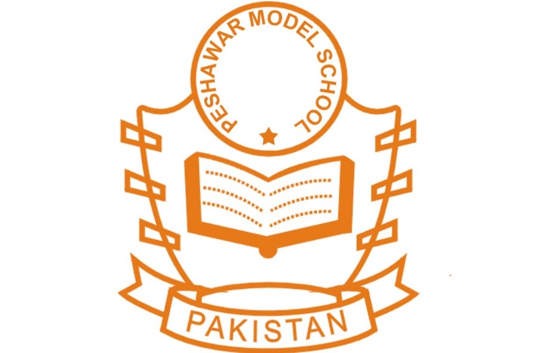
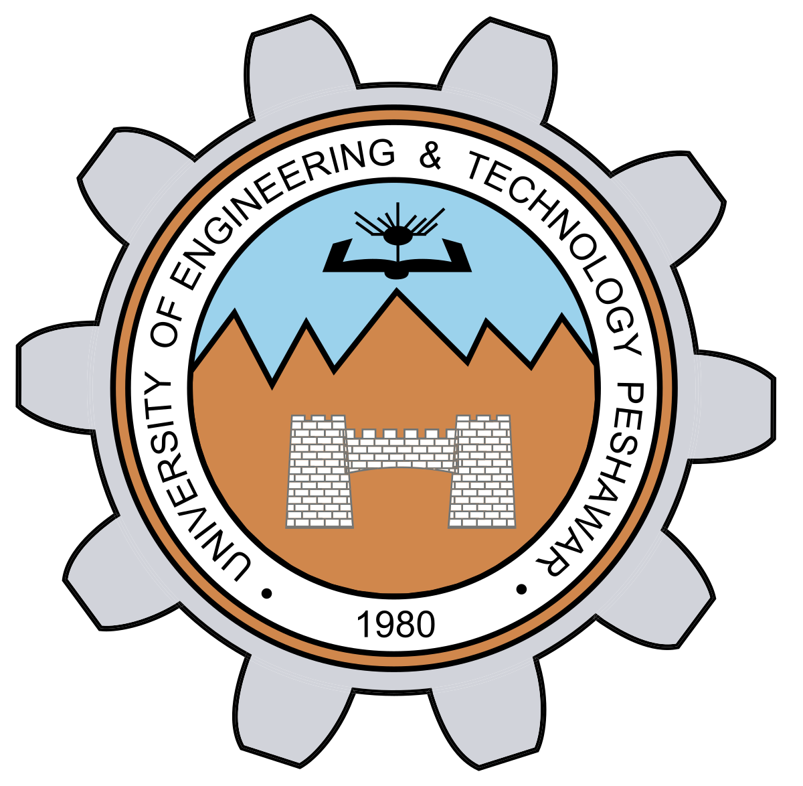
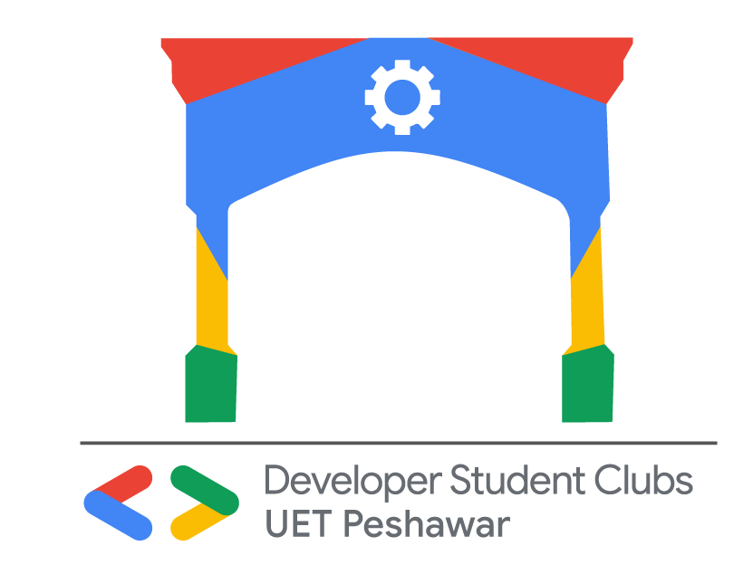
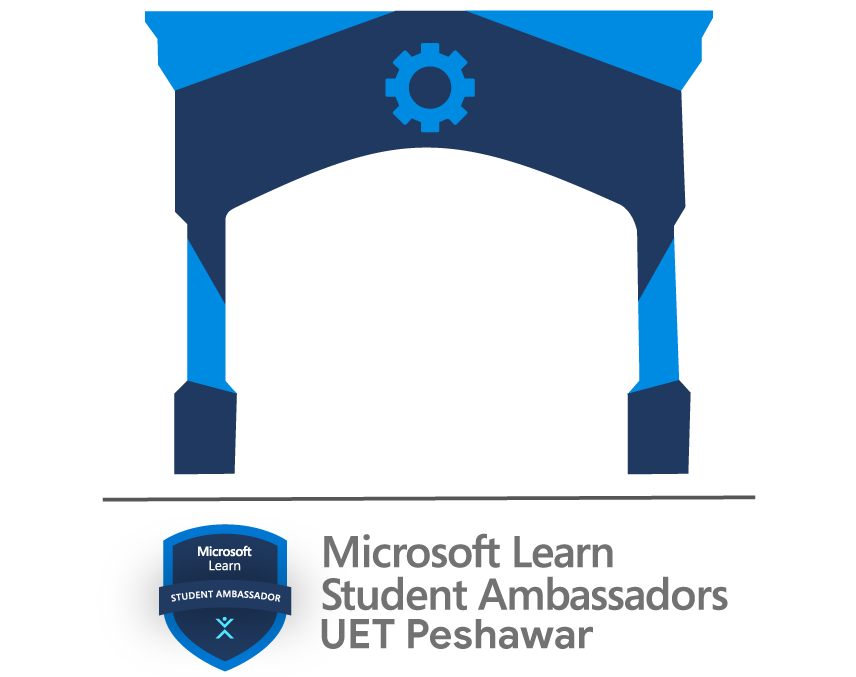
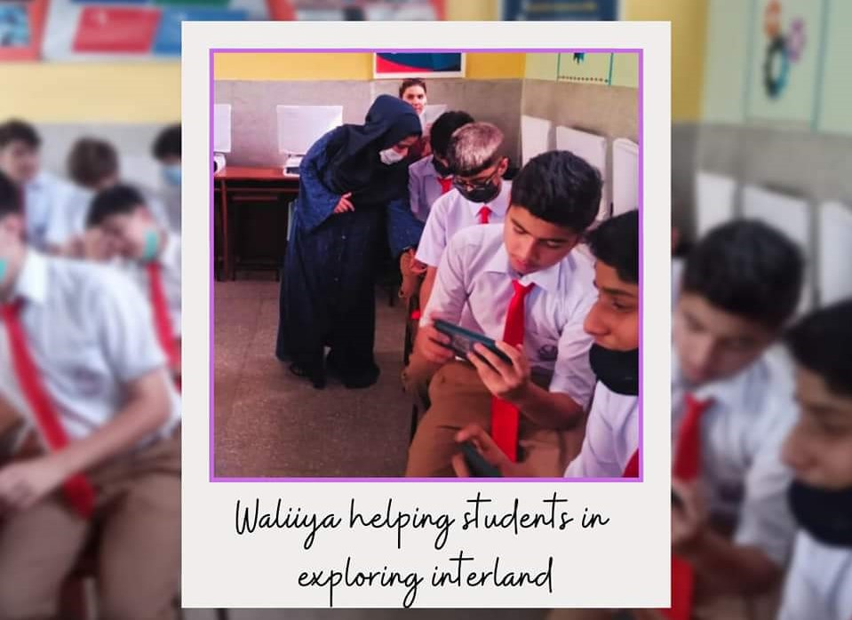

Waliiya Rizwan
Experiences & Volunteering
Life can only be understood backwards; but it must be lived forwards.
With experience life can feel more meaningful as one learns from mistakes and moves towards excellence. Volunteering on the other hand develops love for community and peer to peer learning.
Experience
- O'levels
- F.Sc Pre-Engineering
- University of Engineering & Technology, Peshawar.
- Coursera
- Microsoft
- IBM
- AntonX
- TripMate
I have done O'levels (GCE & IGCSE) from Peshawar Model Girls High School. I got 6 straight As in my Cambridge result. O'levels has empowered me with great skills such as writing, reading, critcal thinking, and communication skills. Together with this, my mathematical and scientific techniques got an uplift too (credit goes to my teachers!). I was selected as my school's representative and as a president of Urdu Debating society. To put the cherry on the top I was awarded as the best debator of the year(2016-2017).
I did my high school (grade 11 and 12) from a reputable institute of my city, Islamia College for girls,Peshawar. With great support of my teachers and my peers, I built my career with pre-engineering techniques such as Calculus, Conic, Physics and Chemistry.
 I am a sophomore pursuing Computer Systems Engineering at School of Computer & Information Systems Engineering, DCSE, UET Peshawar. In this discipline I have been equipped with the design, analysis and application of computers.
 I am a big fan of technology and coursera has enabled me to pursue my dream. I have received certifications in Python from University of Michigan and Google. I am looking forward to build my skill set even more with Coursera and pass on to my community.
I am a big fan of technology and coursera has enabled me to pursue my dream. I have received certifications in Python from University of Michigan and Google. I am looking forward to build my skill set even more with Coursera and pass on to my community.
 Microsoft Learn has paved my way even more in learning and progressing. I have received an MTA badge from Microsoft in Python. I have currently taken Microsoft's 30 day challenge to follow a data science path (for which I am hopeful I will complete).
Microsoft Learn has paved my way even more in learning and progressing. I have received an MTA badge from Microsoft in Python. I have currently taken Microsoft's 30 day challenge to follow a data science path (for which I am hopeful I will complete).
 As a data science enthusiast I have earned Data Science Foundations (level 1) badge from IBM. This course gave me an understanding of the possibilities and opportunities that data science, analytics and big data bring to new applications in any industry. I am eagerly looking ahead to IBM Data Science Professional certificate and want to advance my career in the field of data science.
As a data science enthusiast I have earned Data Science Foundations (level 1) badge from IBM. This course gave me an understanding of the possibilities and opportunities that data science, analytics and big data bring to new applications in any industry. I am eagerly looking ahead to IBM Data Science Professional certificate and want to advance my career in the field of data science.
 I did an internship with AntonX as a Content Writer and Social Media Marketing Manager. It was a great learning experience which enabled me with marketing and Search Engine Optimization skills.
I did an internship with AntonX as a Content Writer and Social Media Marketing Manager. It was a great learning experience which enabled me with marketing and Search Engine Optimization skills.
I did an internship with TripMate as a Content Writer and Social Media Marketing Manager. It was a great learning experience which enabled me with marketing and Search Engine Optimization skills.
Volunteering
- Hosting
- Developer Students Club
- Microsoft Learn student Ambassador UET Peshawar
- Others
 I have hosted many tech and non-tech events which has qualified me with planning and organizing events. Welcoming guests, answering questions, maintaining decorum and liaising with support staff form part of my duties as a host.
I have hosted many tech and non-tech events which has qualified me with planning and organizing events. Welcoming guests, answering questions, maintaining decorum and liaising with support staff form part of my duties as a host.
 DSC is a technical community that combines all the university students, and all the other students who learn, share ideas and come up with viable projects that are likely to solve day to day universe problems supported by Google. I am a member of the core team of DSC UET Peshawar.
 MLSA UET Peshawar is a community of on-campus leaders with a passion for making a difference, building vibrant communities, and sharing the latest tech with other peers. They spread knowledge about Microsoft tools among students to groom their skills. I have worked under their leadership and have enhanced many of my technical skills
 I have also volunteered many events outside the campus. The given picture is of an even hosted by Secure Purple at a school.